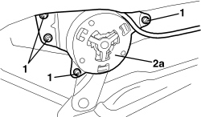
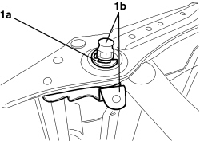

7045A55 MANUAL DEVICE TO ADJUST FRONT SEAT ANGLE - R.R.
- Path
- Procedures > 70 FITTINGS > 7045 FRONT SEATS > 7045A FRONT SEAT ASSEMBLY > 7045A55 MANUAL DEVICE TO ADJUST FRONT SEAT ANGLE - R.R.
- Kind
- repair procedure (removal / refitting; the operation number is the code)
- Applies to
- all engines; all production periods
- Interactive page
- https://sloeber94.github.io/elrnDB-aBrrSpdr/en/#/946004142
Applies to: all engines; all production periods
 Removing
Removing
 Refitting
RefittingOp. 7045A10 FRONT SEAT (ONE), LEFT OR RIGHT - R.R.
Op. 7045A56 DRIVER'S SEAT HEIGHT ADJUSTMENT DEVICE CONTROL LEVER - R.R
Op. 7045A33 CONTROL LEVER FOR DEVICE TO ADJUST FRONT SEAT SWINGING - RR
Op. 7045A43 FRONT SEAT EXTERIOR GUARD (ONE), LEFT OR RIGHT - R.R
1. Undo the bolts fixing the adjustment device.
2. Remove the rocker adjustment device (2a) releasing it from the splined shaft to which it is connected.

Applies to: all engines; all production periods
1. If necessary, release the retaining ring (1a) and remove the splined shaft and lever (1b).

Applies to: all engines; all production periods
Refitting
Removing- Check that the rocker adjustment device is not damaged.
- If removed, position the splined shaft and lever and fit the retaining ring.
- Position the rocker adjustment device by fitting it to the splined shaft.
- Tighten the bolts fixing the adjustment device.
Op. 7045A43 FRONT SEAT EXTERIOR GUARD (ONE), LEFT OR RIGHT - R.R
Op. 7045A33 CONTROL LEVER FOR DEVICE TO ADJUST FRONT SEAT SWINGING - RR
Op. 7045A56 DRIVER'S SEAT HEIGHT ADJUSTMENT DEVICE CONTROL LEVER - R.R
Topics linked from this page (4)
- 7045A10 FRONT SEAT (ONE), LEFT OR RIGHT - R.R.
- 7045A33 CONTROL LEVER FOR DEVICE TO ADJUST FRONT SEAT SWINGING - RR
- 7045A43 FRONT SEAT EXTERIOR GUARD (ONE), LEFT OR RIGHT - R.R
- 7045A56 DRIVER'S SEAT HEIGHT ADJUSTMENT DEVICE CONTROL LEVER - R.R